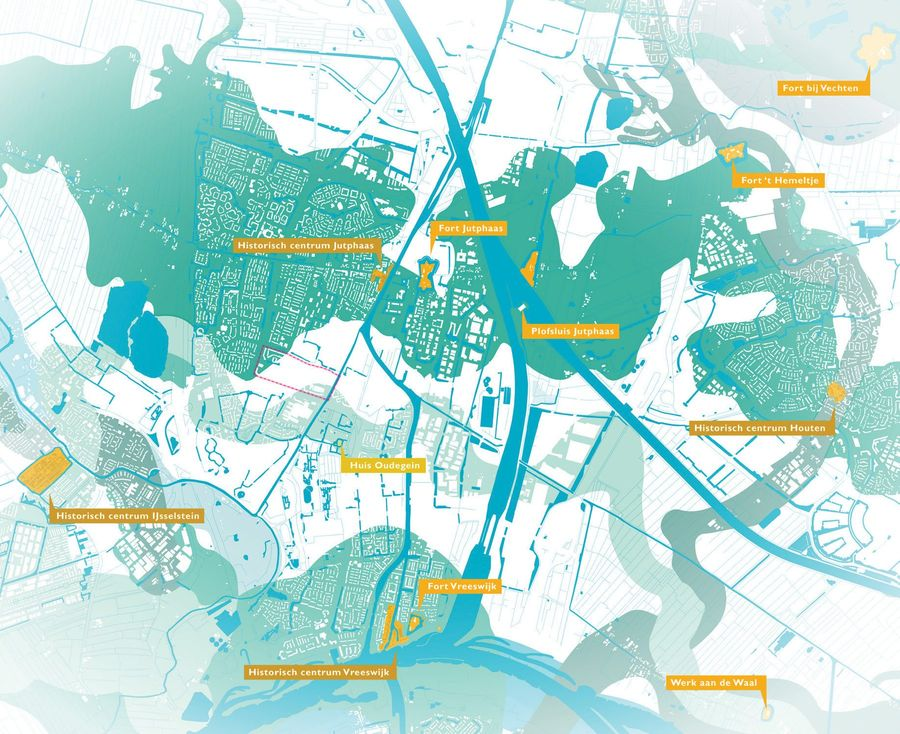
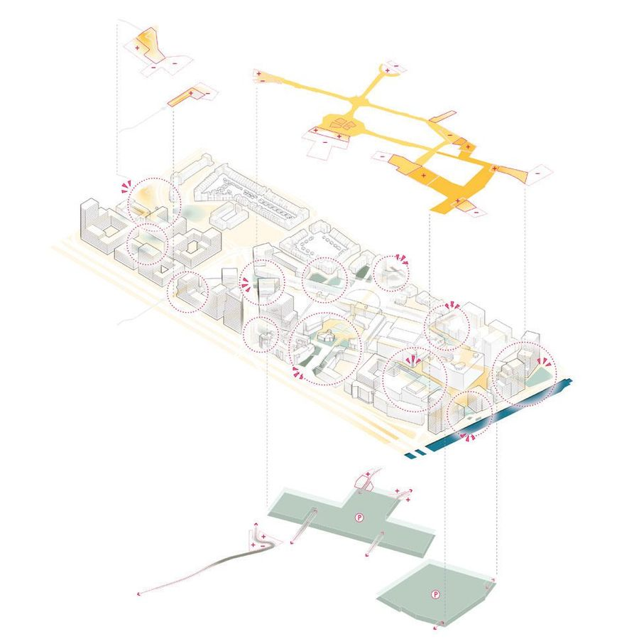
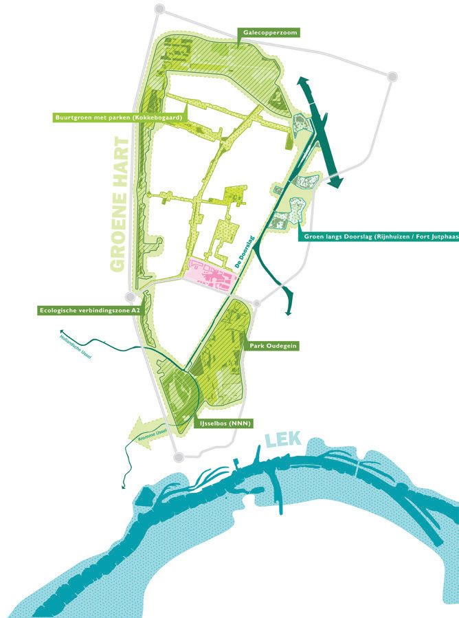
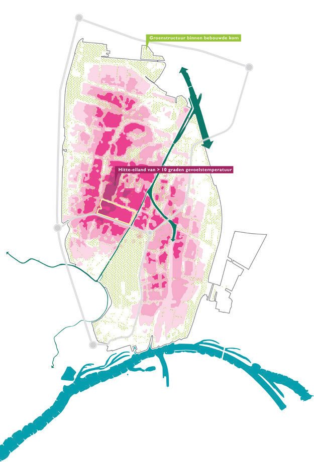
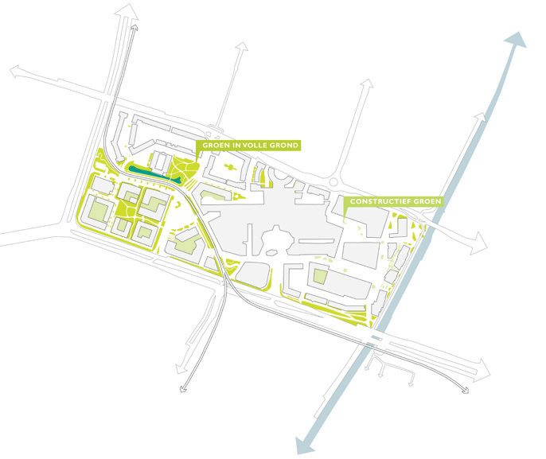
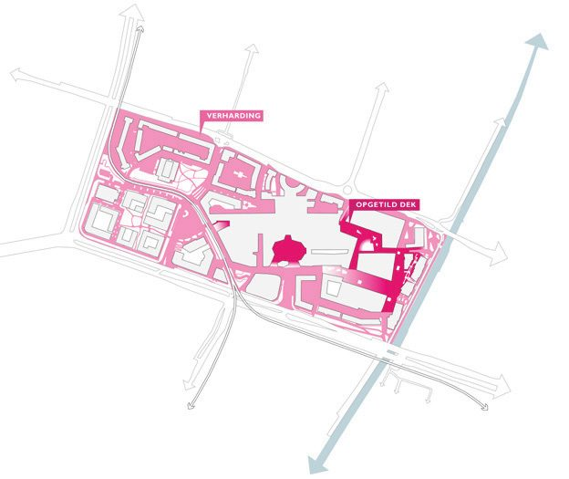

City Nieuwegein
- Place
- Nieuwegein
- Year
- 2022
- Assignment
- Visie
- Firm
- Buro Sant en Co
- Design
- 2022
- Status
- Tender / VO
- Collaborations
- Gemeente Nieuwegein
- Team
- Paul Plambeck, Merel Cozlijsen, Ran Yan

Nieuwegein's centre is built on a raised deck, where rain has almost nowhere to go. This spatial quality framework makes room for water again and uses a river landscape as the structure that guides how the centre grows.
Nieuwegein City is a bustling urban atmosphere inside a village setting. Its distinctive feature is an elevated, covered shopping centre where cars park beneath the shops — an infrastructural environment of varying heights and levels, pedestrian bridges and bicycle tunnels.

The town was established through the growth-centre policy, by merging two villages. As the centre keeps expanding it needs a recognisable identity, and a strategic vision to guide that growth. Reading the city's origins and transformation uncovered its evolving role: from growth centre to a green, sustainable oasis.


The deck currently gives water almost no space, so peak rainfall causes waterlogging while the elevated landscape dries out. Buffering water becomes the organising principle — a river landscape used as the framework for the whole centre.




 Next projectGroene zoomIJdoornschoollocatie, Amsterdam, 2021
Next projectGroene zoomIJdoornschoollocatie, Amsterdam, 2021